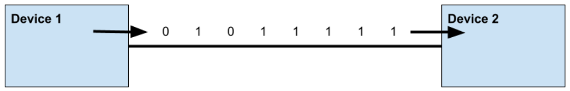
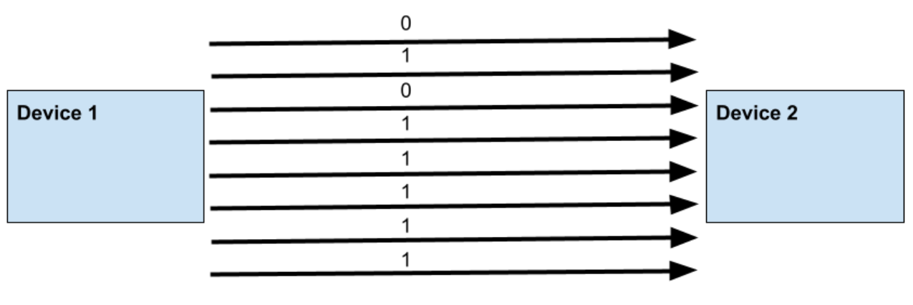

Types of data transmition - Parallel vs Serial

Serial data transmission
→ one byte transmission at a time, sequentially, single wire used
→ can transmit over long distances

Parallel data transmission
→ multiple byte transmission at a time, more than one wire is used → therefor can occur faster
→ more expencive, more wires used.
→ more errors can occur aswell
Parallel vs Serial data transmission
Some more information
Most use high speed serial transmission → such as USB
parallel transmission is not used much
Parallel transmissions are still sometime used in simple computers such as integrated circuits → little chance of interference
Serial
Parallel
Used over Long distances
Single wire
Cost: cheaper → only one wire used
Slower transmission → data transimtted 1 byte at a time
Safer transmission, less errors → it is easier to be accurately collate all the bits together because they are sent one at a time
Used over Short distances
Use multiple wires (thicker wires)
More expensive → multiple wires used
Faster transmission → data is sent simultaneously over multiple lines.
Lass safe transmission, more errors → bits are sent simultaneously and errors can occur in collating them together